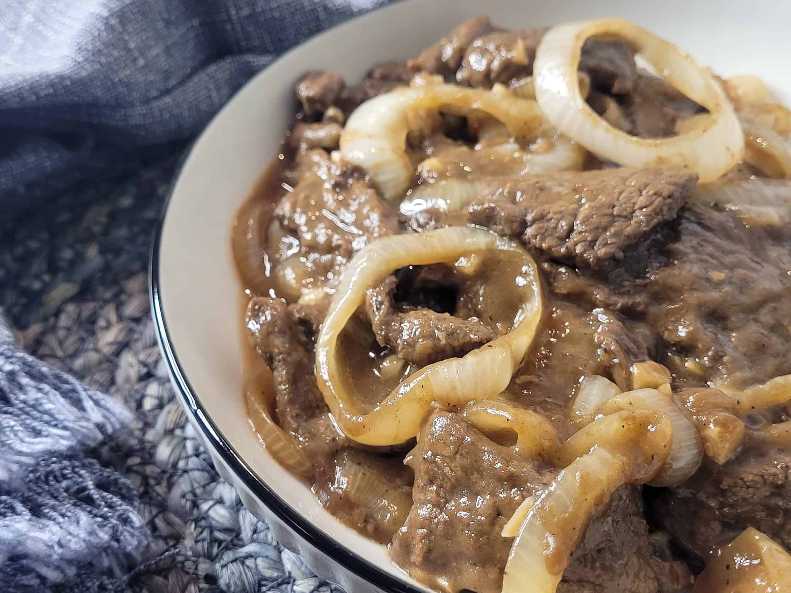

Beefsteak Recipe

Description
Beefsteak is a classic Filipino dish made with thinly sliced beef braised
in a mixture of soy sauce, onions, and citrus!
This dish is heary, tasty, and pairs excellent with steamed white rice!
Ingredients
- 1.5-2 lbs beef sirloin thinly sliced
- 1/4 cup soy sauce
- 1/4 cup lemon juice or calamansi juice
- 5 cloves of garlic (or however much you want!)
- 1-2 whole onion (any kind will do; white, yellow, or red;cut in circles)
- 1/2 tsp black pepper
- 1-2 pinches of salt
- 4 tblspn cooking oil
- 1 cup water
Steps
- Marinate beef in soy sauce, lemon (or calamansi), and ground pepper for at least 30 min-1 hour. Overnight for best result!
- Heat the cooking oil in a pan, then fry half of the onions until they become soft and transluscent. Set aside.
- Drain and set aside for later the marinade from the beef. Fry the beef on the same pan 1 minute per side.
- Add more oil if needed. Saute garlic for 30 seconds, then pour remaining marinade and water. Bring to boil.
- Add beef and cooked onions. Also add rest of raw onions and simmer until meat is tender.
- Season with more black pepper and salt if needed.
- Serve hot and enjoy!